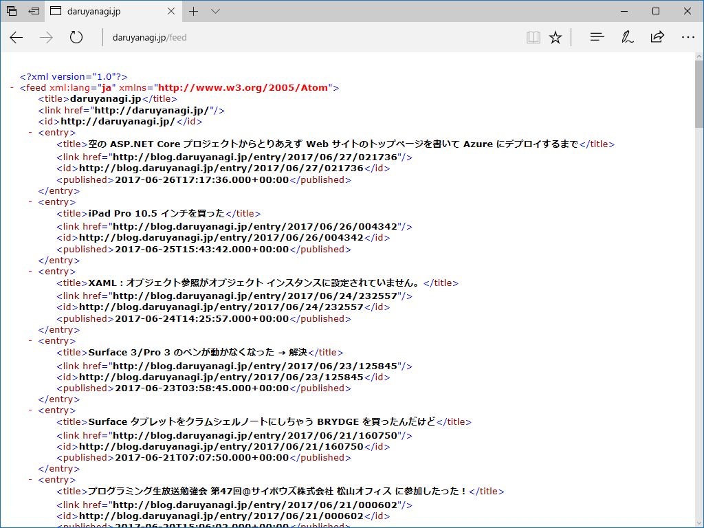

ASP.NET Core MVC で RSS を出力する（適当版）
公開日：
前回は ASP.NET Web Pages のサイトを、付け焼き刃で ASP.NET Core MVC に移植しました。でも、WebMatrix で作ったフィード配信機能が動作しない……。
というわけで、こっちも簡易的な対策を行いました。
ちょっと調べた限りでは、
- Response は使えない → Context.Response を代わりに使う
- System.ServiceModel.Syndication は .NET Core 1.1 で実装されていない → 自分で XML を組み立てる
でイケそう。というわけで、まずはモデルっぽいもの（/Models/FeedItem.cs）を準備。
public class FeedItem { public string Link { get; set; } public string Title { get; set; } public HtmlString Content { get; set; } public DateTime PublishDate { get; set; } }
次にコントローラー（/Controllers/FeedController.cs）を作成。
public class FeedController : Controller { public async Task<IActionResult> Index() { var feeds = new List<FeedItem>(); // FeedItem を適当に Add() してね！ return View(feeds); } }
最後にビュー（/Views/Feed/Index.cshtml）を作成。今回は Atom で出力してみました。
@model IList<FeedItem>@{ Context.Response.ContentType = "application/xml";
var title = "daruyanagi.jp"; var link = "https://blog.daruyanagi.jp/"; }
<feed xmlns="http://www.w3.org/2005/Atom" xml:lang="ja"> <title>@title</title> <link href="@link" /> <id>@link</id> @foreach (var item in Model) { <entry> <title>@item.Title</title> <link href="@item.Link" /> <id>@item.Link</id> <published>@item.PublishDate.ToString("yyyy-MM-dd’T’HH:mm:ss.fffK")</published> </entry> } </feed>
簡易的な対策ですけど、まぁ、ちゃんと動いているので当面はこれでよし。

正しい作法ではない気がしますが（ちゃんとフレームワークでやり方が用意されているかも？）、自己流なりに要領をつかめてきた感じで嬉しいです。ほんとは ASP.NET Web Pages で気軽にやりたいんだけど……調べてみたらそろそろ準備が整いつつあるみたいなので楽しみ。
https://t.co/8bABHDpik7 Web Pages の後継っぽいものに Razer Pages（？）っていうのがあって、次期 VS の Update でツールサポートが付くということを理解したところで、この件に関しては休眠 Zzz……
— だるやなぎ に天使が舞い降りた！ (@daruyanagi) 2017年6月28日